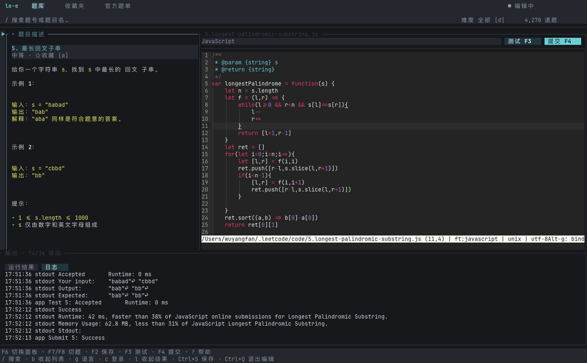

01
中文题库与收藏
搜索、难度筛选、中文题名与题面。个人收藏和官方题单分开管理。
Terminal-first · Local-first
le-e 把题库、题面、Micro 编辑器、运行和提交放在一个本地终端界面。复用你已登录的 clearloop/leetcode-cli，不需要把学习流转交给浏览器标签页。
macOS · Node.js · 本地运行 · 非 LeetCode 官方产品
$ corepack pnpm start
加载题库、收藏夹与本地源码…
$ _
Development snapshot
此截图来自当前本地开发界面，展示的是开发版本。

原始分辨率截图，点击可打开原图。开发版本包含直接提交、编辑器切换及 F7/F8 快捷键；公开版本同步前，请以仓库 README 的安装与交互说明为准。
Workspace, not a wrapper
01
搜索、难度筛选、中文题名与题面。个人收藏和官方题单分开管理。
02
按需读取热题、面试、算法专题与公司题单；公开可见范围会明确标注。
03
在右栏直接编辑；基础补全、保存回执和独立临时配置不改动你的全局 Micro。
04
JavaScript、Python 3、Java、C++。执行后保留失败用例的输入、输出与期望值。
05
先保存再执行。开发版本可从底部操作区直接提交；稳定交互以 README 为准。
06
列表、题面、编辑器三栏同屏；两条竖向分隔线和日志横线均可拖动调整。
Get set up
安装发生在本地。先确保 Node.js、Corepack、pnpm、LeetCode CLI 和 Micro 都可用，再让 le-e 接上已有工作流。
^22.12.0 || >=24.0.0；从 Node.js 官方下载页安装。npm install -g corepack，再执行 corepack enable；细节见 Node.js Corepack 文档。setup:account 会调用 Cargo 编译 Rust 助手。完成后在浏览器登录，参见本地 Cookie 登录步骤。brew install micro rustup已安装 Homebrew 时可先安装 Micro 与 rustup。Homebrew 的 rustup 是 keg-only：下面的 PATH 命令只对当前 shell 生效；持久化配置请参考 官方 rustup 安装文档。也可直接使用 官方 rustup 安装器。
export PATH="$(brew --prefix rustup)/bin:$PATH"rustup default stablenpm install -g corepack && corepack enablecargo install leetcode-cli --version 0.5.4 --lockednode --version && cargo --version && micro --version && leetcode --versiongit clone https://github.com/wyf027/leetcode-solu.gitcd leetcode-solu/project/le-ecorepack pnpm install --frozen-lockfilecorepack pnpm buildcorepack pnpm setup:editorcorepack pnpm setup:accountcorepack pnpm start已完成安装、构建和设置后，日常启动只需 corepack pnpm start。
Keyboard first
这些能力在公开版本文档同步前不应视为稳定安装承诺。请以仓库 main 分支 README 为准。
Local credentials
le-e 复用 CLI 的登录状态。Cookie 不会由本页面收集、上传或追踪；不要在 issue、截图或聊天记录中粘贴真实凭据。
LEETCODE_SESSION 与 csrftoken。使用 Tab 切换、Enter 确认。FAQ
数据库、Shell 等执行能力受上游 CLI 限制。可浏览题单不代表所有题型都能在本地运行。
不是。当前提供基础关键字和常用名称补全，没有类型推断、函数签名检查或完整 LSP 能力。
支持图形协议的终端会原生显示图片；Ghostty 等表现更好，Apple Terminal 等会使用彩色字符画布回退，清晰度较低。